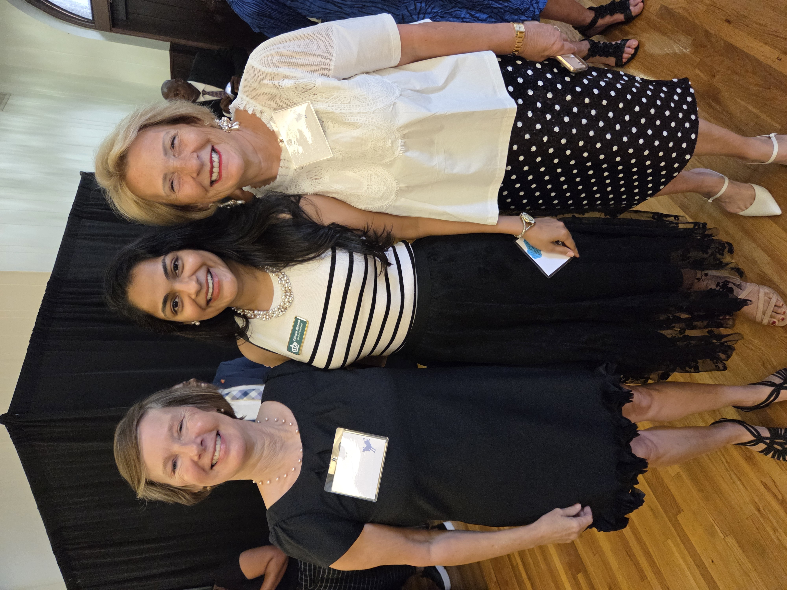
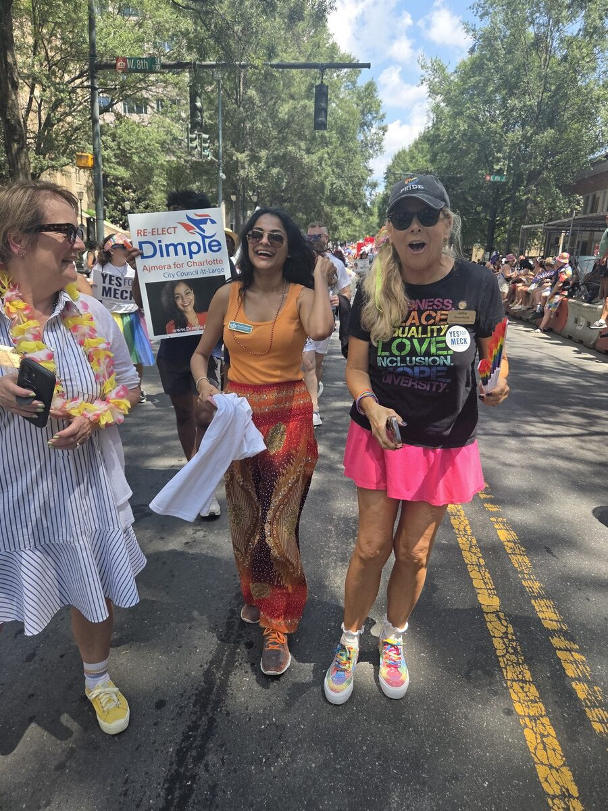
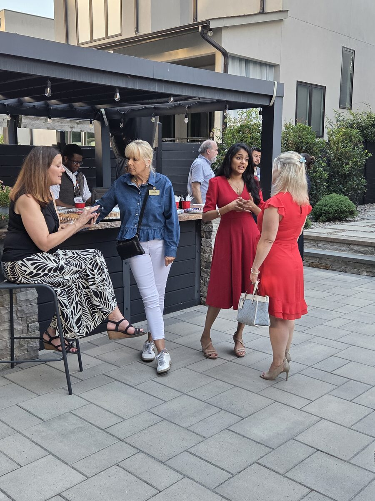
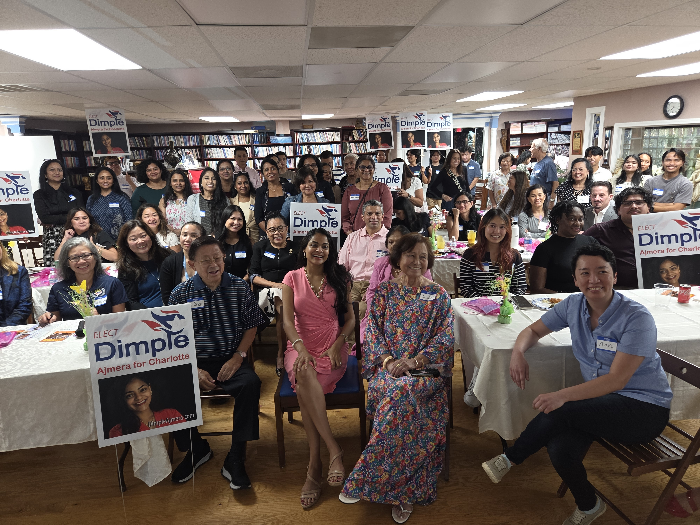
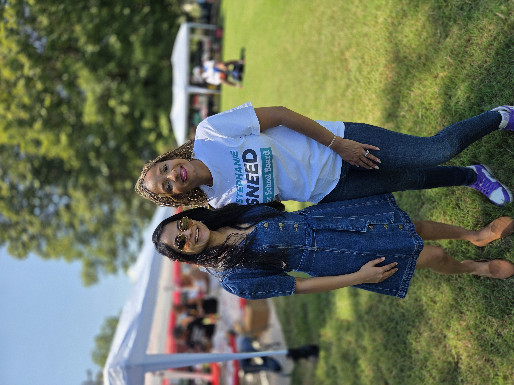

Delivering Results for All of Charlotte
Fiscal discipline, clean water preservation, workforce housing, and safe streets for every neighborhood across Charlotte.
Fiscal discipline, clean water preservation, workforce housing, and safe streets for every neighborhood across Charlotte.
Dimple Ajmera is a Working Mother, four-term Charlotte City Councilwoman, and Certified Public Accountant (CPA).
Dimple immigrated to the United States with her family at age 16. Overcoming language barriers, she learned English, graduated from Southern High School in Durham, earned her accounting degree from the University of Southern California, and became a Certified Public Accountant managing multi-million dollar budgets at major corporate institutions including Deloitte and TIAA.
Driven by public service values, Dimple left corporate finance to serve Charlotte. On City Council, she has championed public safety, CMPD officer family healthcare benefits, workforce housing bonds, clean water policies, and small business support.







Watch Council Member Dimple Ajmera discuss city policy and follow her live updates on Instagram & LinkedIn.
Dimple outlines policies to protect Charlotte's municipal water supply.
Championing smart, resilient infrastructure for future generations.
Addressing traffic crashes and investing in safer pedestrian crossings.
Receive direct updates on city council votes, environmental town halls, economic reports, and candidate news straight to your inbox.
Dimple works tirelessly to build a safe Charlotte for all families. She championed providing city healthcare coverage for families of CMPD officers killed in the line of duty, which was unanimously approved by City Council.
Winner of the 2019 Blue Sky Award, Dimple called for a pause on new data center developments near neighborhoods to safeguard Charlotte’s natural water supply and tree canopy.
Dimple continues to champion municipal housing bonds, down-payment assistance programs for first-time homebuyers, and anti-displacement strategies keeping long-term residents in their homes.
As a CPA with corporate finance background at TIAA, Dimple applies rigorous fiscal oversight while expanding access to capital and municipal contracts for local small businesses.
"Ajmera continues to be a thoughtful and dedicated representative with a knack for hearing and uplifting the community’s concerns. We recommend Ajmera."
"Councilwoman Ajmera championed providing city healthcare coverages for families of employees killed in the line of duty after the death of CMPD Officer Joshua Eyer... Due to Councilwoman Ajmera, this benefit was unanimously approved by all members of council."